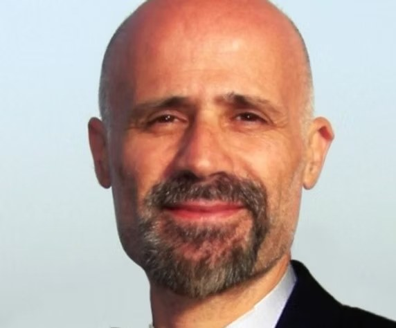

Dr. Arnaldo Visintín
Presidente
Fundada en Buenos Aires el 7 de junio de 1996 · Más de 30 años impulsando las tecnologías del hidrógeno
Por iniciativa del Dr. José Podestá (UNLP), y con alrededor de veinte participantes en un seminario de hidrógeno en Buenos Aires, el 7 de junio de 1996 se fundó la Asociación Argentina del Hidrógeno. Estas son las dos personas que la hicieron posible y la sostuvieron durante casi treinta años.
Presidente y socio fundador de la AAH
Nació en la ciudad de Necochea. Inició sus estudios de ingeniería mecánica en la Universidad de La Plata y los continuó en el Instituto Balseiro, del Centro Atómico Bariloche, donde se graduó en 1972 como licenciado en Física, obteniendo su doctorado diez años más tarde. Fue justamente el tema de su tesis —el efecto del hidrógeno en las aleaciones de circonio— el que lo introdujo de lleno en las tecnologías de este elemento como solución para remediar la contaminación antropogénica.
Se desempeñó como profesor del Instituto Balseiro durante casi cuarenta años (1976–2015) en el área de materiales, trabajos especiales y tesis doctorales. Fue vicedirector de la carrera de Ingeniería Nuclear (1985–1988), jefe de la División Metales - Metalurgia (1977–1995) y director de INVAP entre 1991 y 1994.
Fundó en 1996 la Asociación Argentina del Hidrógeno, que presidió hasta su partida, y logró crear —con el apoyo del IRAM— el subcomité argentino del hidrógeno, como imagen especular del TC197 de la ISO, al que presidió por más de dos décadas. En 1997 adaptó el motor de un Renault 9 a hidrógeno gaseoso y lo presentó en el XII Congreso Internacional de Hidrógeno, celebrado en Buenos Aires en 1998, del cual fue anfitrión y organizador, con representantes de 42 países.
Fue vicepresidente para Latinoamérica de la International Association for Hydrogen Energy (IAHE) desde 2012. Asesoró a la empresa Hychico SA en el desarrollo tecnológico de la planta Viento-Hidrógeno en Comodoro Rivadavia, Patagonia. En 2005 impulsó la creación de la Planta Experimental de Hidrógeno de Pico Truncado, Santa Cruz, liderando su diseño y gestión. En 2009 logró la instalación del módulo argentino de energía limpia MAEL I en la Base Esperanza, sector Antártico Argentino, produciendo hidrógeno verde mediante energía eólica con componentes nacionales.
Creía profundamente en la educación, impulsando escuelas-fábrica y la extensión áulica de la UTN en Bariloche, y en las comunidades energéticas sostenibles como motor de trabajo genuino y mejor calidad de vida. Nos ha dejado trazado un camino cuyo ejemplo nos impone el deber de continuar.

Ingeniero Químico, miembro fundador de la AAH
Desde el comienzo de las actividades de la Asociación asumió con enorme responsabilidad y total dedicación tres tareas que le fueron confiadas: la difusión de las bondades del hidrógeno, la normativa y los aspectos de seguridad de su manejo.
Para ello creó la revista Hidrógeno, cuyo primer ejemplar se presentó en mayo de 1998: la primera publicación en idioma castellano dedicada a este elemento y sus tecnologías, editada sin interrupciones hasta el presente año. Se convirtió en el órgano de difusión oficial de la Asociación.
Se desempeñó como secretario del comité técnico de hidrógeno TC197 de la ISO, secundando al presidente en una exigente labor técnica que permitió a la Argentina convertirse en miembro permanente de dicho comité. Desde sus comienzos cimentó el marco normativo imprescindible para el desarrollo de proyectos de hidrógeno: gracias a su trabajo, el IRAM pudo contar con documentación técnica de seguridad de hidrógeno en español, cubriendo una necesidad clave y constituyendo una herramienta pedagógica de mucha utilidad. Décadas más tarde asumió la presidencia del comité argentino de estas tecnologías.
Su valiosa experiencia en seguridad en el manejo del hidrógeno lo convirtió en un referente en la materia, motivando su incorporación al equipo que instaló en la Base Esperanza de la Antártida el módulo de generación eléctrica con hidrógeno verde (MAEL I, verano de 2009). También participó activamente en la construcción de la planta experimental de hidrógeno de Pico Truncado, Santa Cruz (2005).
Quienes lo conocieron supieron de su compromiso y generosidad como educador. Nos ha dejado un ejemplo de conducta personal y profesional que, en homenaje a su memoria, deberemos emular.
Autoridades vigentes de la Asociación Argentina del Hidrógeno.
Presidente
Vicepresidente
Tesorero
Conocé los objetivos estratégicos que guían el trabajo de la AAH hoy, treinta años después de aquel seminario fundacional.
Ver objetivos estratégicos